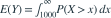

单次损失  服从均值为 2000 元的指数分布。保险合同设置 1000 元的普通免赔额，赔款
服从均值为 2000 元的指数分布。保险合同设置 1000 元的普通免赔额，赔款  。不附加其他限额或比例，
。不附加其他限额或比例， 为多少元？
为多少元？
服从均值为 2000 元的指数分布。保险合同设置 1000 元的普通免赔额，赔款 。不附加其他限额或比例， 为多少元？- A
- B
- C
- D
我已思考，展开答案与解析
正确答案：B
- 非负变量期望可写为生存函数积分：

。 - ，故积分为 元。
易错提醒普通免赔额只支付超过免赔额的部分，不能直接用均值减免赔额。
原模拟卷 A · 模拟卷 A 第 9 题
原创